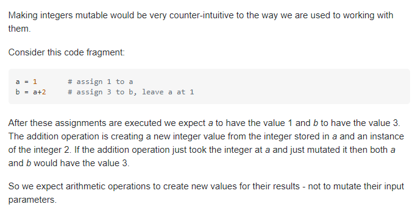

שאלה טובה מאוד שנשאלה בטלגרם, הרגשתי צורך להדביק גם פה:
אם יש לי רשימה של tuples אני לא יכולה לשנות את הערכים של התאים נכון?
כי הם immutable, למרות שהרשימה היא mutable.
הקוד (העובד) בשביל להוכיח שההנחה בשאלה לא מדויקת:
l = [('a', 'b'), ('c', 'd')]
l[0] = ('e', 'f')
הסבר:
איך זה אפשרי? הרי טאפל לא ברי שינוי.
זה אפשרי. אין עם זה בעיה, מכיוון שאת משנה את הרשימה ולא את ה־tuple. צריך לחשוב רגע על ההיררכיה של איך כל המבנה המורכב הזה נראה עבור פייתון.
אנסה לעזור לך לדמיין:
יש לנו את הלייזר הראשי. הוא זה שמצביע כביכול על כל המבנה המורכב הזה. השם שלו הוא l, והוא מצביע על הרשימה הענקית שנמצאת בחוץ.
בתוך l יש לנו הרבה לייזרים קטנים – אחד עבור כל תא ברשימה. הלייזר הראשון מצביע לטאפל ('a', 'b') (אין לו כ"כ שם, נקרא לו l[0] ). הלייזר השני מצביע לטאפל ('c', 'd') .
סיכום ביניים: יש לנו לייזר אחד גדול בשם l שמצביע לרשימה, ובתוכו עוד הרבה לייזרים (כאורך הרשימה), כל אחד מצביע לתוכן התא שלו ברשימה.
בתוך כל טאפל כזה, יש לנו עוד לייזרים קטנטנים שמצביעים על הערכים בתוך ה־tuple. אז ב־tuple הראשון שלנו יש 2 לייזרים, אחד מצביע על a והשני מצביע על b. בטאפל השני גם יש שני לייזרים, אחד מצביע על c והשני מצביע על d.
כשאנחנו אומרים על משהו שהוא Immutable אנחנו בעצם אומרים שאנחנו לא יכולים לשנות את התוכן שלו. זאת אומרת – אי אפשר להוסיף לו לייזרים או להוריד ממנו לייזרים, או לגרום ללייזרים שבתוכו להצביע למקום אחר
ולכן: את הלייזרים של list, שהיא mutable, כמו l[0] וכמו l[1] אנחנו יכולים להפנות ל־tuple חדש, בדיוק כמו שהראיתי בדוגמת הקוד למעלה.
לעומת זאת, את הלייזרים שבתוך טאפל כלשהו אי אפשר לשנות – אז אי אפשר להוסיף או להוריד איברים מתוך הטאפלים ברשימה, או לשנות את הערכים שנמצאים בתוכם.
רק רוצה לוודא שהבנתי עד הסוף:
אם למשל הייתי רושמת: l[0][0] = ‘dana’
זה היה מראה לי שגיאה נכון?
בהחלט
אם נעשה לצורך העניין l[0] = l[0] +('g',) זה אפשרי אם ככה? כי אנחנו בעצם מכניסים רשומה חדשה לרשימה ולא באמת משנים את הטאפל
בהחלט אפשרי, שים לב שיצרת טאפל חדש לחלוטין ולא באמת שינית את הטאפל המקורי.
רק שינית את החץ הירוק (הלייזר) מלהצביע על הטאפל השמאלי שמופיע על הלוח, ללהצביע על טאפל חדש שאתה יצרת שמורכב מהאיברים בטאפל השמאלי ועוד האיבר ‘g’.
אני לא יכולה להסביר בכלל כמה הקורס הזה מלמד אותי לפתח ועוזר לי להתפתח בעצמי
ים והצוות, אתם מלמדים אותנו מה זה חינוך ומה זו אהבה אמיתית לעשייה.
תודה תודה תודה. @Yam@itamaraviv@guykeller
2 לייקים
doriguy
@Yam
וואו הסבר קוהרנטי, שאפו
גם הקפטן הוק מרשים
לייק 1
eyalmerav
בואו נחזור איזה 4 חודשים אחורה בערך…
דבר מוזר שנתקלתי בו:
נניח ש a ו b הם משתנים מסוג int
a = 100
b = 100
אני תמיד חשבתי ש int זה mutable
ולכן id(a) == id(b) יתן False
אבל מסתבר שעבור a = 1000 , b=1000
id(a) == id(b) יתן True
האם ניתן לקבל הסבר למה זה מתנהג ככה?
והאם אפשר לדעת בוודאות מראש עבור כל סוג טיפוס האם הוא Mutable או Immutable?
או שזה בכלל לא קשור ל מיוטבל ואימיוטבל אלא קשור למשהו אחר??
תודה רבה!
איל
לייק 1
ofirp
משתה INT הוא Immutable, תראה כאן הסבר תמציתי למה זה הגיוני:

ori81510
אני חושב שמה שמסביר את זה זו העובדה שבפייתון כל דבר הוא אובייקט, אפילו מספר.
כאן יש הסבר טוב שעשה לי קצת סדר בראש וגם תזכורת ל id, אז תודה על השאלה


{kind=link}
{kind=link}